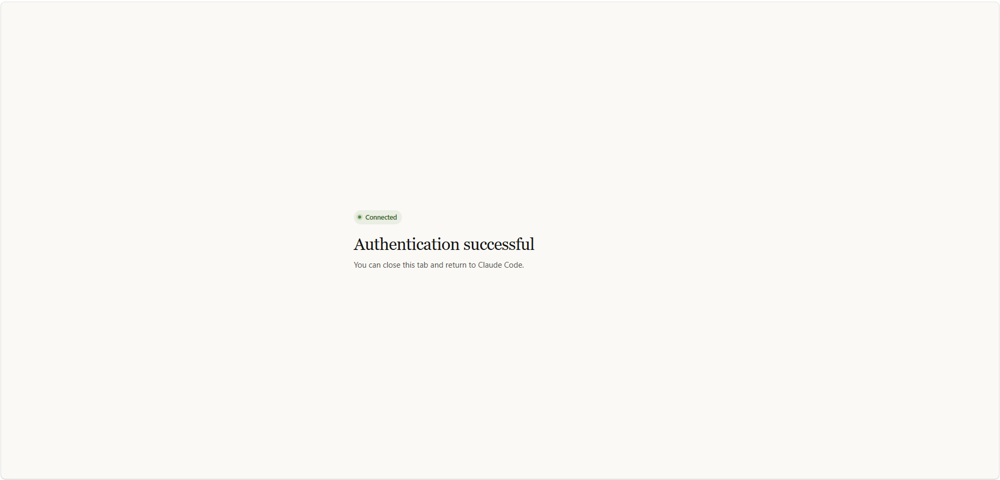

2026-08AXLab-154대상: 비개발자 · 코드 몰라도 OK선행: Vercel 배포 따라하기 완료
Supabase 따라하기와 목표가 똑같은 문서입니다. 다른 점은 웹 화면에서 버튼을 누르는 대신, Claude Code 창에 말로 요청한다는 것입니다.
웹 버전: Supabase 사이트에 들어가 표를 만들고, 데이터를 손으로 입력하고, 키를 복사해 붙여넣습니다.
MCP 버전(이 문서): "공지사항 표 만들어줘"라고 말하면 Claude가 대신 만듭니다.
MCP가 뭔가요? — Claude Code가 Supabase·Vercel 같은 서비스에 직접 연결되는 통로입니다. 통로가 열리면 여러분이 대신 클릭하지 않아도 Claude가 그 서비스를 조작할 수 있습니다. 1·2회차에서 쓰던 "저장해줘"·"최신으로 맞춰줘"와 같은 방식 — 말로 요청하면 Claude가 처리하는 것 — 이 Supabase까지 넓어진 것입니다.
어느 문서를 봐야 하나요? — 강사 안내를 따르세요. 둘 다 결과는 같습니다. 웹 버전은 "화면을 눈으로 익히는" 장점이 있고, MCP 버전은 "빠르고 오타가 안 나는" 장점이 있습니다.
준비물
Claude Code가 설치되어 실행되는 상태 (1회차에서 준비 완료)
팀 프로젝트 폴더에서 Claude Code를 열어둔 상태
GitHub 계정 — Supabase 계정과 프로젝트는 아래 시작 전 준비에서 직접 만듭니다
Vercel 통로가 먼저 열려 있어야 합니다. 이 문서의 4단계에서 Vercel 환경변수에 값을 넣고 재배포하는데, 그러려면 Vercel 배포 따라하기 (MCP 버전) 4단계의 MCP 연결과 npx vercel login이 둘 다 끝나 있어야 합니다. Vercel을 웹 버전으로만 진행한 팀은 그 4단계를 먼저 하고 오세요 — 안 하면 이 문서 4단계에서 막힙니다.
처음 한 번만 계정과 프로젝트를 만들고, 그 뒤 본 실습은 0~5단계입니다. 웹 버전에서 0~7단계에 걸쳐 클릭하던 일이 여기서는 대부분 한 문장으로 줄어듭니다.
[처음 한 번] A. 계정 만들기 → B. 프로젝트 만들기
0. 통로 열기(MCP 연결) → 1. 표 만들기 → 2. 데이터 넣기
→ 3. 읽기 공개 정책 → 4. 사이트에 연결 → 5. 화면 확인
시작 전 준비 (처음 한 번만 · 웹 화면에서)
계정을 만들고 데이터가 담길 프로젝트를 하나 만듭니다. 이 두 가지는 사람이 직접 해야 하는 일이라 웹 화면에서 진행합니다. 한 번 해두면 다음 실습부터는 건너뜁니다.
① 고른 조직이 맞는지 확인하고 ② Authorize를 누릅니다 — 권한이 이 조직에만 적용됩니다

이 화면이 나오면 탭을 닫고 Claude Code로 돌아갑니다
터미널로 돌아와 Connected라고 나오면 성공입니다.
이미 목록에 Supabase가 보인다면 강사가 미리 등록해 둔 것입니다. 1·2번을 건너뛰고 /mcp부터 하세요.
강사 포인트 — 이 통로는 여러분 Supabase 계정 전체에 연결됩니다. 다른 팀 프로젝트를 실수로 건드리지 않도록, 강사가 팀별로 범위를 좁혀 등록해 줄 수 있습니다. 아래 안전하게 쓰기 참고.
1단계표 만들기
표(테이블) = 엑셀 시트 한 장입니다. 1교시에 종이에 적은 데이터 항목이 그대로 열(column)이 됩니다.
Claude Code 창에 우리 팀 내용으로 바꿔서 이렇게 말합니다.
supabase에 공지사항 표 만들어줘.
표 이름은 notices,
제목(title)은 글자, 내용(content)은 글자,
작성일은 자동으로 들어가게 해줘.
Claude가 표를 만들고 이렇게 답합니다.
notices 표를 만들었습니다.
id 자동 번호
title 제목 (글자)
content 내용 (글자)
created_at 작성일 (자동)
행 보안(RLS)을 켜 두었습니다.
이게 끝입니다. 웹 버전의 2단계(Table Editor에서 열 하나하나 추가) 전체가 이 한 줄로 대체됩니다.
바꿀 것은 이름뿐입니다 — 공지사항이 아니라 "맛집 목록"이면 notices 대신 places, title·content 대신 name·address처럼 우리 팀 항목을 말하면 됩니다. 영어 소문자로 지어달라고 하세요 — 4단계 이후 코드에서 이 이름을 그대로 씁니다.
표가 제대로 만들어졌는지 확인하려면 우리 표 구조 보여줘라고 말하면 됩니다.
2단계데이터 몇 줄 넣기
표가 비어 있으면 화면에도 아무것도 안 나옵니다. 2~3줄 넣어봅니다.
notices에 공지 3개 넣어줘.
첫 공지 / 상상인 교육 3회차에 오신 것을 환영합니다
둘째 공지 / 오늘은 Vercel과 Supabase를 연결합니다
셋째 공지 / 팀별 발표는 8교시에 진행합니다
Claude가 넣고 결과를 보여줍니다.
3건 넣었습니다.
1. 첫 공지
2. 둘째 공지
3. 셋째 공지
웹 버전 3단계(Insert row를 세 번 반복)가 한 번에 끝납니다.
3단계읽기 공개 정책 (RLS)
여기가 가장 중요한 단계입니다. 지금 상태로는 데이터가 표 안에 있어도 사이트 화면에는 안 나옵니다.
Supabase는 표를 만들 때 행 보안(RLS)을 켜 두는데, 이건 "바깥에서 함부로 읽지 못하게" 잠가두는 장치입니다. 잠금을 풀지 않으면 우리 사이트도 못 읽습니다.
먼저 — 잠겨 있다는 걸 눈으로 확인해보기 (선택)
정책을 걸기 전에 이렇게 물어보면 지금 상태를 볼 수 있습니다. 건너뛰고 바로 정책을 걸어도 됩니다.
지금 바깥에서 notices를 읽으면 어떻게 되는지 확인해줘
Claude가 실제로 바깥에서 요청을 보내 결과를 보여줍니다. 표에 데이터 3줄이 분명히 있는데도 이렇게 나옵니다.
읽기 결과: [] (빈 목록)
에러가 아니라 빈 목록이 온다는 게 핵심입니다. 그래서 "왜 화면에 아무것도 안 나오지?" 하고 한참 헤매게 됩니다.
정책 걸기
notices를 누구나 읽을 수 있게 공개 정책 걸어줘.
쓰기는 막아둬.
읽기 공개 정책을 추가했습니다.
이제 사이트에서 목록을 불러올 수 있습니다.
쓰기는 여전히 막혀 있습니다.
위 확인을 해봤다면 다시 확인해줘라고 물어보세요. 이번에는 3줄이 그대로 나옵니다.
이건 데모라서 읽기만 공개로 여는 설정입니다. 비밀번호·개인정보 같은 민감한 데이터는 이렇게 열지 않습니다. 실제 서비스에서는 "로그인한 사람만" 같은 조건을 붙여 좁힙니다.
RLS를 아예 꺼버리면 안 되나요? — 그러면 읽기는 되지만 쓰기·삭제까지 같이 열립니다. 4단계에서 넣을 열쇠(anon)는 브라우저에 그대로 내려가는 공개 키라, RLS가 꺼져 있으면 사이트 주소를 아는 누구나 표를 지울 수 있습니다. RLS를 켠 채 읽기 정책만 여는 지금 방식이 안전합니다.
4단계사이트에 연결 (주소·열쇠 + 재배포)
사이트가 이 표를 읽으려면 주소(URL)와 열쇠(API Key)가 필요합니다. 웹 버전은 이 두 값을 눈으로 찾아 복사해 Vercel에 붙여넣는데(4·5단계), 여기가 가장 오타가 많이 나는 구간입니다.
먼저 — 화면 코드가 있는지 확인하세요. 목록을 보여주는 코드가 아직 없으면 지금 만들어야 합니다. 아래 환경변수를 넣고 배포한 뒤에 코드를 만들면 배포를 또 해야 하니까요.
우리 사이트에 공지 목록 보여주는 화면 만들어줘
이 부분은 웹 버전 6단계와 같고, MCP와 무관하게 Claude가 원래 해주던 일입니다.